第5章：便利な機能を追加しよう
アクションボタンとオートメーションで、アプリをもっと使いやすくします
5-1 ActionとAutomationの違いを知ろう
AppSheetには「動き」を設定する仕組みが2つあります。Action（アクション） と Automation（オートメーション） です。それぞれの役割を理解しましょう。
■ 全体像
タップして実行
自動実行
| 項目 | Action（アクション） | Automation（オートメーション） |
|---|---|---|
| トリガー | ユーザーがボタンをタップ | データの追加・変更・削除を自動検知 |
| 実行場所 | アプリ上（端末/ブラウザ） | クラウド（AppSheetサーバー） |
| 主な用途 | ステータス変更、画面遷移、行コピー | メール送信、通知、データ連携 |
| 設定場所 | エディタ：Actions | エディタ：Automations |
■ Actionの4つのタイプ
Actionには以下の4タイプがあります。この章では主に Data change（データ変更）タイプを使います。
| タイプ | 説明 | 例 |
|---|---|---|
| Navigation | アプリ内の別のビューへ移動する | 詳細画面 → 一覧画面に戻る |
| Data change | データの値を変更・行の追加・削除 | ステータスを「返却済み」に変更 |
| External | 外部サービスとの連携（メール起動、電話、URLを開く） | Google Mapsで設置場所を表示 |
| Grouped | 複数のActionを順番に実行 | ステータス変更 → 画面遷移をまとめて実行 |
■ Automationの構造
Automationは Bot → Event → Process → Step の4階層で構成されます。
まとまり
（トリガー）
（手順）
（メール送信等）
| 要素 | 役割 | 今回の設定例 |
|---|---|---|
| Bot | 自動処理を1つにまとめる単位 | 「貸出通知Bot」 |
| Event | 何をきっかけに実行するか | 貸出履歴テーブルに行が追加されたとき |
| Process | 実行するステップの順序 | （1ステップのみ） |
| Step | 具体的な処理内容 | メールを送信する |
5-2 「返却済み」ステータスを1タップで変更するActionを作ろう
貸出中の備品が返却されたとき、1タップで「返却日」に今日の日付を入れるActionを作ります。
■ このActionの動作イメージ
返却日：空欄
■ Actionを作成する
左ナビゲーションの 「Actions」 をクリックします。
Actionsパネル上部の 「＋」 ボタンをクリックし、「Create a new action」 を選択します。
以下の通り設定します。「Set these columns」 では、カラムに 「返却日」 を選択し、値に TODAY() と入力してください。
| 設定項目 | 設定値 |
|---|---|
| Action name | 返却処理 |
| For a record of this table | 貸出履歴 |
| Do this | Data: set the value of some columns in this row |
| Set these columns | 返却日 = TODAY() |
右上の 「Save」 で保存します。
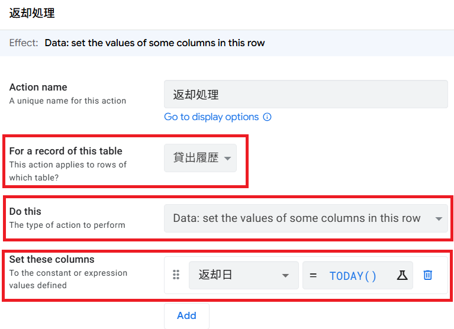
■ 表示条件を設定する（返却日が空のときだけ表示）
すでに返却済みのレコードにはボタンを表示したくないので、Behavior セクションで表示条件を設定します。
作成した「返却処理」Actionの設定画面で 「Behavior」 セクションを展開します。
「Only if this condition is true」 に以下の式を入力します。
「Needs confirmation?」 を ON にします。
「Confirmation Message」 に 「この備品を返却済みにしますか？」 と入力します。
右上の 「Save」 で保存します。
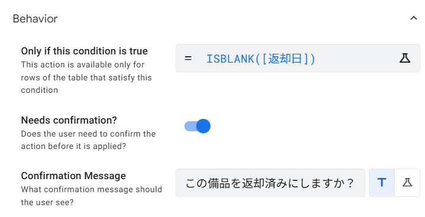
■ 表示設定を変更する
「Display」 セクションを展開します。
「Display name」 に 「返却する」 と入力します。
「Action Icon」 から 「check-circle」（✅系のアイコン）を選択します。
右上の 「Save」 で保存します。
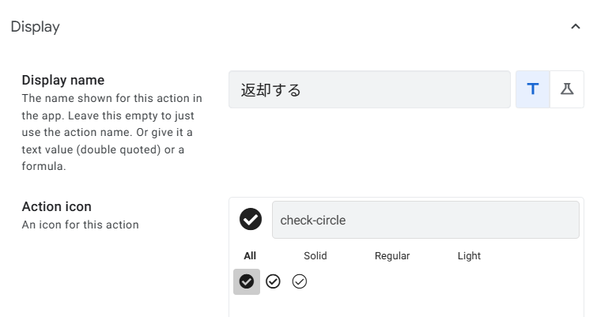
5-3 「貸出登録」ボタンのActionを作ろう
備品の詳細画面（Detail View）から、直接その備品の貸出登録を行うActionを作ります。備品IDが自動入力された状態で貸出履歴に行が追加されるので、入力の手間が省けます。
■ このActionの動作イメージ
ノートPC（Dell）
■ Actionを作成する
左ナビゲーションの 「Actions」 をクリックします。
Actionsパネル上部の 「＋」 ボタンをクリックし、「Create a new action」 を選択します。
以下の通り設定します。
| 設定項目 | 設定値 |
|---|---|
| Action name | 貸出登録 |
| For a record of this table | 備品一覧 |
| Do this | Data: add a new row to another table using values from this row |
| Table to add to | 貸出履歴 |
「Set these columns」 の 「Add」 をクリックし、以下の値を設定します。
| カラム | 値（式） | 説明 |
|---|---|---|
| 備品ID | [備品ID] | 現在表示中の備品IDを自動入力 |
| 貸出日 | TODAY() | 今日の日付を自動入力 |
| 返却予定日 | TODAY() + 7 | 1週間後を返却予定日に設定 |
「Display」 セクションで Display name を 「この備品を貸し出す」 に変更します。Action Icon はアイコン選択画面で 「send」 と検索し、表示される紙飛行機アイコンを選択してください。
「Behavior」 セクションで 「Needs confirmation?」 を ON にし、Confirmation Messageに 「この備品の貸出登録を行いますか？」 と入力します。
右上の 「Save」 で保存します。
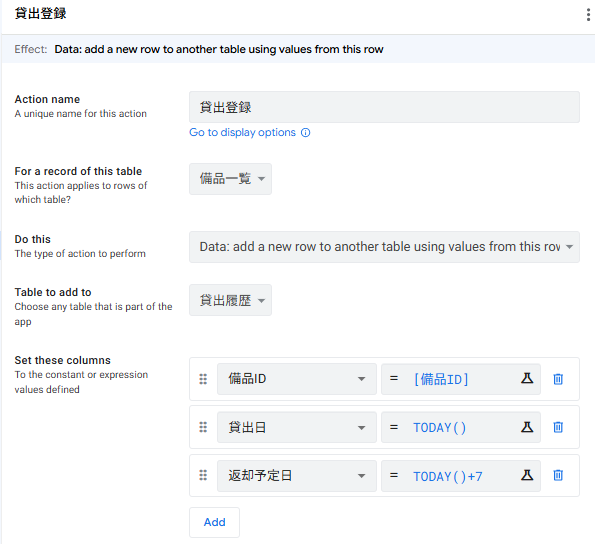
5-4 Automationで貸出時にメール通知を送ろう
貸出履歴テーブルに新しい行が追加されたとき、自動でメール通知を送信するBot（オートメーション）を作成します。
■ 完成イメージ
行の追加を検知
Send an email
■ Botを作成する
左ナビゲーションの 「Automations」 をクリックします。
上部の 「＋」 ボタンをクリックし、「Create a new bot」 を選択します。
Bot名を 「貸出通知Bot」 に変更します（名前部分をクリックして編集）。
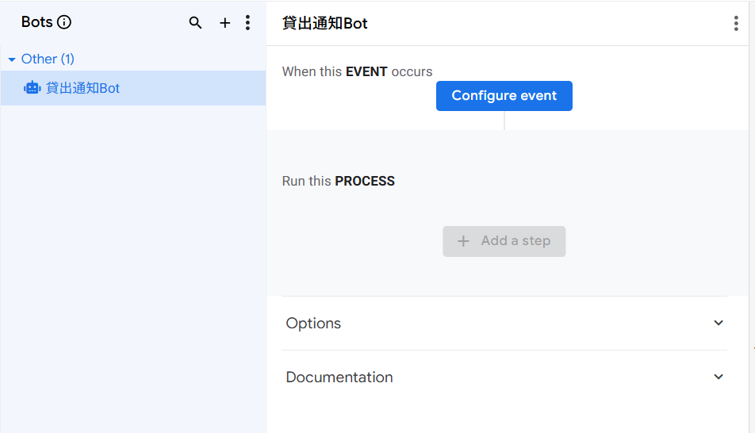
■ Eventを設定する
作成されたBotの 「Configure event」 をクリックします。
右側にSettings画面が表示されます。以下の通り設定します。
| 設定項目 | 設定値 |
|---|---|
| Event name | 貸出データ追加（任意の名前に変更） |
| Event source | App（デフォルトのまま） |
| Table | 貸出履歴 |
| Data change type | Adds のみチェック ON （Deletes・Updates はチェック OFF） |
| Condition | （空欄のまま ─ 今回は条件なし） |
「Data change type」 は3つのチェックボックス（Adds / Deletes / Updates）で構成されています。「Adds」だけにチェックを入れ、他の2つはチェックを外してください。
右上の 「Save」 で保存します。
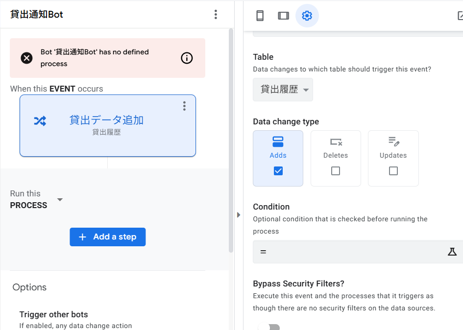
・Adds … 新しい行が追加されたとき
・Deletes … 行が削除されたとき
・Updates … 既存の行が更新されたとき
複数にチェックを入れると、それぞれの操作でBotが発動します。今回は貸出登録（行追加）のみ通知したいので、Addsだけにします。
■ Process / Stepを設定する
Bot画面の 「+ Add a step」 ボタンをクリックします。
「Step name」入力欄と「SUGGESTIONS」の一覧が表示されます。SUGGESTIONSは使用せず、下部の 「Create a new step」 をクリックします。
Step の設定画面が開きます。「Step name」 に 「メール送信」 と入力します。
「Settings」 タブで、以下の通り設定します。
| 設定項目 | 設定値 |
|---|---|
| Step name | メール送信 |
| Step type | Send an email |
| Email Type | Custom template |
| To | 管理者のメールアドレス（例：admin@example.com） ※ 自分のGmailアドレスでテスト可 |
| Subject | 【備品貸出通知】<<[備品ID]>> が貸し出されました |
| Body | 下記テンプレート参照 |
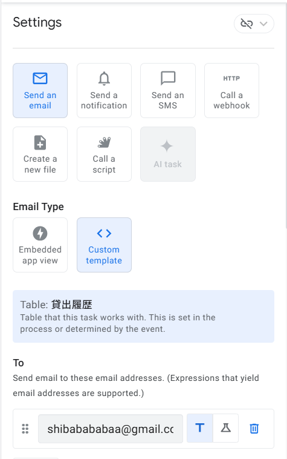
■ メール本文テンプレート
右上の 「Save」 で保存します。エラーメッセージ「has no defined process」が消えていることを確認してください。
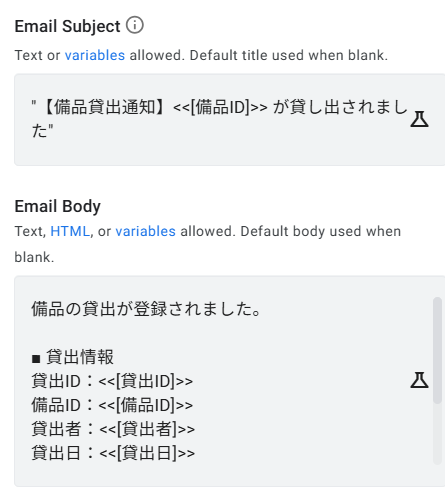
<<[貸出者]>> は実行時に「田中太郎」のような実際の値になります。
5-5 動作確認をしよう
設定したActionとAutomationが正しく動作するか、プレビュー画面で確認します。
■ 返却処理Actionの確認
プレビュー画面で 「貸出履歴」 ビューを開きます。
返却日が空欄 のレコード（例：L004 山田美咲）をタップして詳細画面を開きます。
「返却する」 ボタンが表示されていることを確認し、タップします。
確認ダイアログ 「この備品を返却済みにしますか？」 が表示されたら 「OK」 をタップします。
「返却日」に今日の日付が自動入力されていることを確認します。
すでに返却済みのレコード（例：L001 田中太郎）の詳細画面を開き、「返却する」ボタンが表示されていないことを確認します。
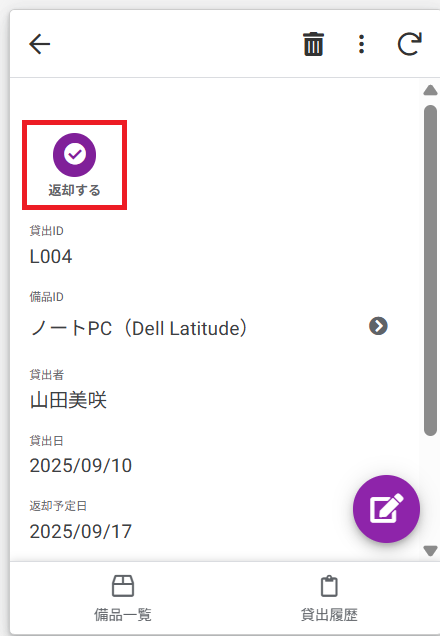
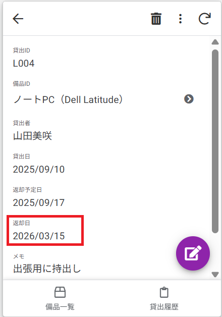
■ 貸出登録Actionの確認
プレビュー画面で 「備品一覧」 ビューを開きます。
任意の備品（例：B001 ノートPC）をタップして詳細画面を開きます。
「この備品を貸し出す」 ボタンをタップします。
確認ダイアログが表示されたら 「OK」 をタップします。
「貸出履歴」ビューに切り替え、新しい行が追加されていることを確認します。備品IDが自動入力されているかチェックしてください。
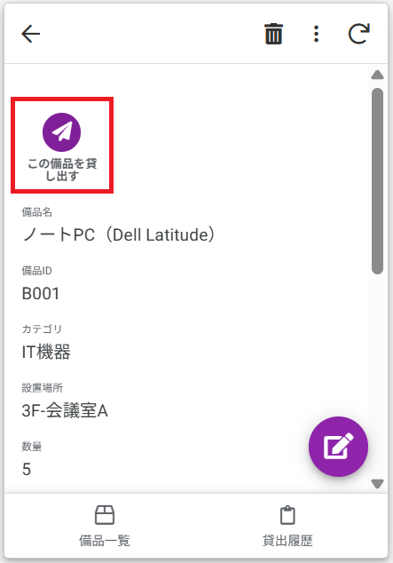
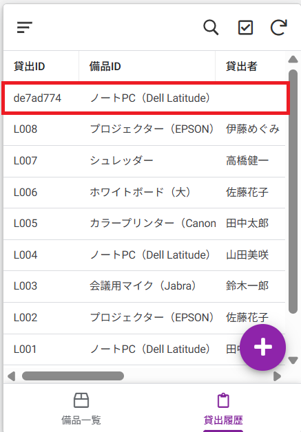
■ メール通知Automationの確認
上記の貸出登録Actionを実行し、新しい行を追加します（またはフォームから手動追加しても可）。
「To」に設定したメールアドレスの受信箱を確認します。
「【備品貸出通知】B001 が貸し出されました」のような件名のメールが届いていれば成功です。
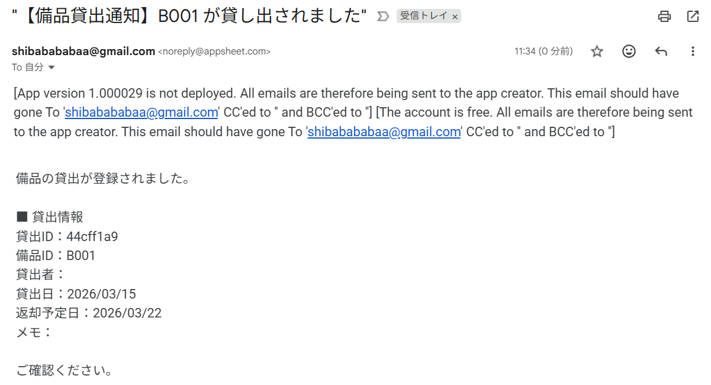
・迷惑メールフォルダを確認してください。
・Automationsの画面で「貸出通知Bot」のステータスがエラーになっていないか確認してください。
・「To」のメールアドレスに入力ミスがないか確認してください。
・プレビュー画面ではAutomationが動作しない場合があります。デプロイ後に再テストしてください。
■ 第5章のまとめ
| No. | やったこと | ポイント |
|---|---|---|
| 1 | ActionとAutomationの違いを理解 | ボタン操作 vs 自動実行の使い分け |
| 2 | 「返却処理」Action作成 | Data: set values で返却日に TODAY() を設定 |
| 3 | Behavior設定で表示条件追加 | ISBLANK([返却日]) で未返却のみ表示 |
| 4 | 「貸出登録」Action作成 | Data: add a new row で備品IDを自動引き継ぎ |
| 5 | 「貸出通知Bot」Automation作成 | 行追加時にメール自動送信 |
| 6 | プレビューで動作確認 | 3つの機能を実際に実行してテスト |
・貸出履歴の詳細画面に「返却する」ボタンが表示される（返却日が空の場合のみ）
・備品一覧の詳細画面に「この備品を貸し出す」ボタンが表示される
・貸出登録後にメール通知が届く（デプロイ後に再確認）